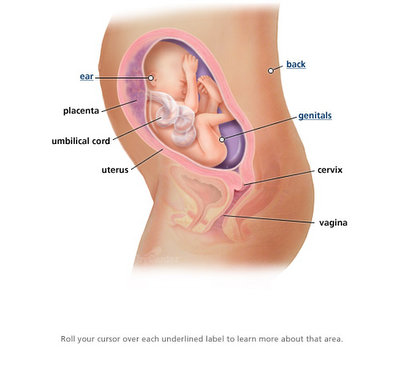
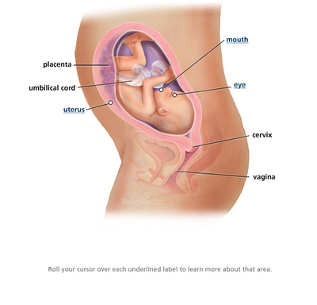
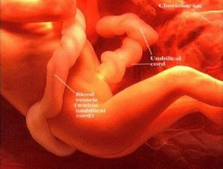

Minggu ke-25 :
Bayi cegukan, apakah Anda merasakannya? Ini tandanya ia
sedang latihan bernafas. Ia menghirup dan mengeluarkan air ketuban.
Jika air ketuban yang tertelan terlalu banyak, ia akan cegukan.
Tulang bayi semakin mengeras dan bayi menjadi bayi yang
semakin kuat. Saluran darah di paru-paru bayi sudah semakin berkembang.
Garis disekitar mulut bayi sudah mulai membentuk dan fungsi menelan
sudah semakin membaik. Indera penciuman bayi sudah semakin membaik
karena di minggu ini bagian hidung bayi (nostrils) sudah mulai
berfungsi. Berat bayi sudah mencapai 650-670 gram dengan tinggi badan
34-37 cm.

Minggu ke-26 :
Bayi sudah bisa mengedipkan matanya selain itu retina matanya telah
mulai terbentuk. Aktifitas otaknya yang berkaitan dengan pendengarannya
dan pengelihatannya sudah berfungsi, bunda dapat memulai
memperdengarkan lagu yang ringan dan mencoba untuk memberi cahaya lebih
disekitar perut, mungkin bunda akan merasakan anggukan kepala si kecil.
Berat badan bayi sudah mencapai 750-780gram, sedangkan tingginya 35-38
cm.

Minggu ke-27 :
Minggu pertama trimester ketiga, paru-paru, hati dan sistem
kekebalan tubuh masih harus dimatangkan. Namun jika ia dilahirkan,
memiliki peluang 85 persen untuk bertahan.
Indra perasa mulai terbentuk. Bayi juga sudah pandai mengisap ibu jari
dan menelan air ketuban yang mengelilinginya. Berat umum bayi seusia si
kecil 870-890 gram dengan tinggi badan 36-38 cm.
Minggu ke-28 :
Minggu ini beratnya 1100 gram dan panjangnya 25 cm. Otak bayi
semakin berkembang dan meluas. Lapisan lemak pun semakin berkembang dan
rambutnya terus tumbuh
Lemak dalam badan mulai bertambah. Walaupun gerakan bayi
sudah mulai terbatas karena beratnya yang semakin bertambah, namun
matanya sudah mulai bisa berkedip bila melihat cahaya melalui dinding
perut ibunya. Kepalanya sudah mengarah ke bawah. Paru-parunya belum
sempurna, namun jika saat ini ia terlahir ke dunia, si kecil
kemungkinan besar telah dapat bertahan hidup.
